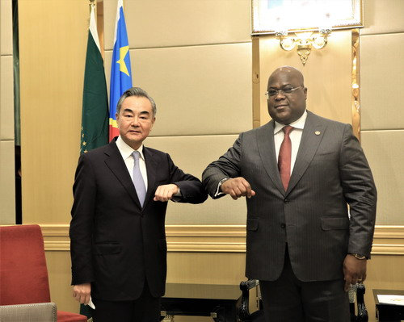

3.人間と自然環境との相互依存関係
コンゴ共和国は世界で２番目の森林地帯をもち、７つの国々にまたがっています。
人による森林伐採や採掘によりに森林地帯の危機にさらされています。

4.空間的相互依存作用
コンゴ共和国は、旧宗主国のフランスとの関係が強いです。
ですが、1970年代にマルクス・レーニン主義であったため、伝統的に中華人民共和国との経済的関係も強くなってきています。

5.地域
コンゴ共和国はアフリカの中で雨が多いです。
6.SDGs
コンゴは「13.気候変動に具体的な対策を」に力を入れています。
尾張。
前へ